蓝色的血液，真实的血液
序言
如果看看这个星球的历史，你将发现你被告知的一切都是谎言。所有，所有的历史、科学书籍都是为了控制这个星球的那些人的秘密议程而篡改出来蒙蔽人类这个整体。这些书像最近的“新纪元运动”（New Age）一样有着误导性，像亚利桑那的赛多拉市（Sedona）或者圣塔菲这些地方就属于典型的这些新运动的发源地，但只是光明会（Illuminati）的众多麦加朝圣场所之个例。
现在到处是泛滥的各种信息，而且太多是被故意散布出来。我在这本书里提到的内容主要来自――我之前的工作范畴Montauk计划、我的一些私人经历、和光明会内部科学家的交流、和ET及其他维度的生命的交流（他们中有些我在各种政府的议程里遇到），最后，通过我和我的超灵Oversoul的接触。
不过我无法在这里提供任何物理证据，唯一能告诉你的就是这些证据存在于某些地方。所有的存在其实是同时发生的，时间、空间只是我们这个物理现实的幻影。但在这个书里我会按照线性的时间视角来交代主要的历史事件。宇宙是无限的，在物质或非物质层次上，但现在我将告诉你其中某个有限的片段。
要理解Illuminati是如何获取到今天这样的全球掌控，你得先弄清Illuminati到底是什么，这就需要先搞清你所处的这个世界的生命的来源和之后的演化。我并不相信宗教，任何有组织的或者其他形式的。所有宗教，不管它是什么，都是被设计用来意识控制（Mind Control）大众的一种工具，在这同时阻碍人们的“正常”思考。我相信上帝，God，但这个上帝不是宗教。
我的上一本书出版以后的这些年，其他很多研究者也出版了许多关于蜥蜥Reptilian（因为一些外形和特征上的原因被认为是爬虫族，所以也叫爬虫人；有时也用Reptoid或Lizard） 和他们的宗教仪式的书。现在这方面的主题已经渐渐引起了人们的真正注意，很多人还无法接受，甚至仅仅把这些书当作娱乐性的消遣都做不到，因为他们无法面对
这个“事实”――和人类有杂交关系的蜥蜥实际上算是控制着这个星球，而且一直在进行某种仪式，人血在这些祭祀活动里经常作为象征性的必要环节而出现，甚至包括使用人作为激素、荷尔蒙的供给工具。我希望这些都不是真的，但我无法改变历史事实、每天发生着的事件、或者那些我知道是真实的事情。
这些控制者操纵计划的大事件到如此的程度，绝大多数人都被转移开视线，只有他们自己把握着这个星球的真相和命运。人们以为他们一直活在一种无法预测的随机混乱之局势中，事实上，从来就没有这种被叫做“混乱”Chaos的东西。混乱本身只是种没有被理解和洞察的秩序而已。
想像一只，爬在被铺设好的瓷砖地板上的蚂蚁。蚂蚁也许感到困扰和迷惑，不知该向哪里爬行。人从更高的视角观察能很清晰和容易得出结论――通过观察瓷砖的布局、凹凸――哪条路线蚂蚁将能够到达目的地。在蚂蚁的视角上却只有困扰和混乱，对人来说，注定的蓝图清晰可见。
控制者眼里的人就是蚂蚁，控制者精于这样的操作，使得人们完全感觉不到自己被操纵了。控制者们极其耐心，他们的工作很有条理，其视野和目标基于整个星球。
一旦开始意识到这些，你同样能够从混乱中识破其秩序，作出清醒的判断，获得对你自己生活和命运的控制。
2、透明的族类
我在Montauk项目里工作的时候时常遇到一些被叫做为蜥蜥（Reptilian）的外星族类，他们似乎可以“凭空”进入或是离开我们的物理现实世界。这些蜥蜥们使用较低的星光层Astral Plane（有的地方叫第 4维频率带）作为他们的据点，或者叫进入我们的3维世界的切入点。这是那些我们看不见的星光层上的恶魔的传说的来源。一些Montauk项目的负责人向我介绍，这些生物是很久很久以前被一些未知的其他ET带到天龙座的(Draco
star system），但没人知道这些蜥蜥的真实来源。
这些蜥蜥和我交流时完全使用心灵感应（telepathy），他们的意识告诉我，他们从很远的“未来”来到这里，在他们的那个未来人类已经不再存在，他们这个族类并不发源于我们这个“现实宇宙”。他们族类旅行到遥远的“过去”是为了创造出一种新的生物，即蜥蜥人，用来对抗和测试人类。
他还说他们获得了天狼双星A（Sirius A）上的天狼星人的帮助，创建出这个蜥蜥族类，随后播种到天龙座。
为了在这个物理世界运行生物机体，蜥蜥人需要物理层面上的基因结构。这些最开始还是透明的族类于是从现在已经显化成物态的天琴星人（Lyraen）那里获取基因，天琴星人发色金黄或者深红，有着蓝色或者绿色的眼睛。这些基因随后和这个透明族类的集体能量簇混合，随后显化出蜥蜥的形态，这是为什么如今蜥蜥人需要从雅利安（Aryan）谱系的人们那里获得基因来维系他们在这个世界的存在。
蜥蜥被从星光层上创造出来，接下来需要一个物态的家园、据点来展开他们的任务。这些显化的蜥蜥被带到各种不同的“现实世界”，在那里他们可以成为支配者族类。在意识方面他们被编码为要去征服和吸收他们遭遇到的所有其他族类和物种，那些无法被吸收、支配的族类将被他们清除。所有这些是为了验证出某种“完美”的可适应和挑战任何环境的物态族类。你可以把它想像成一场宏大的、泛宇宙的生存者竞赛。
蜥蜥人有着被编码的信仰――他们相信自己是最强有力的生物物理结构。用技术性的话说，蜥蜥人的DNA构型在极长的时间跨度里也不会有大的变化，基本上保持着恒定。这反过来又证明他们已接近完美――已经不再需要进一步的适应能力。与之形成对比的是哺乳类动物，需要不断地适应环境而进化，持续地演变以更好地生存。
蜥蜥人的思维认为，这种必须不断进化的族类是脆弱和低等的。蜥蜥人双性同体，这是大多非物理形态生命的共同特征；而他们认为这个宇宙的神圣意识God-Mind，同样是两种极性的统一。种种这些原因都让蜥蜥人相信他们相对其他族类更像支配者。这种优越感和种族中心主义“价值观”，让他们认为控制和征服这个空间-时间宇宙理所当然。
蜥蜥们通常作为一个整体，透过一种集体意识来协调思维和行动，不过他们还是分为7个不同的支种族，不同的支系对应不同的功能。
另外，印度教的种姓制度，是蜥蜥的7层级社会形态的一个翻版。
3、行星沦陷了？
天琴星人当时并没有什么防御体系，他们成了蜥蜥族最便宜的目标，蜥蜥族也可被称为Draco族。天琴人的故乡被Draco帝国猛烈地攻击，幸存下来的四散逃亡到银河系的其他星球。这次对天琴座的战争余波至今还能被科学家观察到（1985年一篇报纸发表了一些科学家观察到的一些继续在扩散的冲击余波，来自银河中心区域。他们认为这些残余的膨胀物质环可能有至少几百万年历史，它的规模如此大，在完全消散前还在继续向银河的边缘传播。这些科学家说还无法解释这个冲击环的形成原因。）
天琴人逃到了猎户座Orion，鲸鱼座T星（Tau Ceti，近太阳恒星之一，距离太阳不到12光年），昴宿星团Pleiades，小犬座α星（即南河三Procyon，α、β、γ通常按照一个星座中亮度等级排序（有时例外），因此α表示最亮，Procyon也属于近太阳恒星之一，距离大约11光年，由互相绕旋的Procyon A和白矮星Procyon B构成，几乎大多恒星都是双星系统），Antaries，半人马座α星（距离太阳最近的恒星即是它，但事实上是个三星系统，由相互绕旋的A、B星和另外一颗更小的恒星Proxima组成，Proxima即比邻星，距离太阳4.2光年），Barnard（一颗红矮星，除了半人马座α三星系统外，距离太阳第四近，不到6光年），大角（Arcturus，牧夫座α），以及其他几十颗恒星，其中一颗就是Sun（即太阳）。
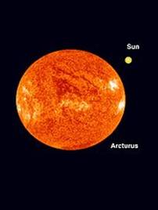
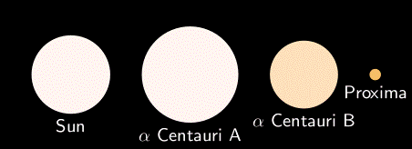
太阳与半人马座Alpha三星系统体积对比
批注：半人马座Alpha三恒星系统正是电影化身Avatar的发生地点，也许我们应该问问詹姆斯・卡梅隆（James Cameron）以了解更多的情况。在电影里，半人马座Alpha星A（α Centauri A ）有一颗叫做Polyphemis的行星，直径约为木星的两倍。Polyphemis有14颗卫星，其中一颗叫Pandora的卫星是电影里这些Na’vi人的家乡。
天琴星人金发蓝眼，少数是红头发和翠绿眼睛，在他们的社会里红发被认为是特别的有着可以联系非物质世界的超感能力，因为这个原因，红发的天琴人到了繁衍后代的年龄尤其被大家喜爱。因为他们的小孩也将继承这些超能力的基因，所以这种婚姻需要得到特殊的许可。
这样，红发的同类事实上有他们独立的社会区域以和其他金发的分别开，甚至还有自己独特的子文化。蜥蜥族同样渴望这些基因，因为那时蜥蜥们还不具有太多的心灵直觉能力。后来，每当蜥蜥来到一处天琴人的新家园星球，天琴人都被迫贡献出一些红发同类来取悦蜥蜥。最终这完全变成了某种祭奉魔鬼的牺牲仪式。
那时候地球是太阳第二颗行星，表面还几乎全是海洋，只有很少一点陆地，唯一有智慧的生物是种没有任何科技文明的两栖种族，地球的大气也几乎是液态雾，环境并不适合类人族。
逃亡的天琴人后裔经过数代后重新发展出他们的新文明，但他们的基因朝着完全不一样的方向显化，因为在不同的星球上他们延续出不同的集体意识簇。那个时候，火星和Maldek和现在的地球环境比较近似――温暖的气候，富含氧的大气圈。Maldek的引力大过火星，与这样的重力环境相适应，Maldek上的天琴人身体更加结实，意识里更加好胜。
小的冲突开始出现在双方之间，火星富含资 源，Maldek的居民希望得到更多的供应，火星人开始做好抵御准备。他们向天狼星A的一颗叫Khoom的行星寻求帮助，希望用一些防御体系来保护火星不受进攻，为了抵御两种威胁：蜥蜥，和类人族邻居。天狼星人在这个银河系里善于经营科技贸易，他们有最好的科技，甚至其中一些技术分享给蜥蜥。
天狼星人于是帮助火星人在火星地表下建立了一套防御机制。
火星是空心行星，包括地球和木星也是。行星由恒星喷射出的物质团聚形成，都拥有空心的内部。当融态物质团在恒星最开始的自旋过程中被抛出后，它逐渐冷却。高速自转的离心力不断将流态和气态的部分向外层推挤，形成“壳”之结构。由于被推挤到四周，中轴附近成为相对最薄的气体出口，逐渐固化的壳压迫内部高热的气流在两极形成开口。剩下的融化的流态内核和高压气体被困在地壳内部，周期性地通过类似火山的形式释放。
这样的联接点总是 位于行星的19纬度线附近，比如地球上的夏威夷火山带在19纬度，火星上最高的火山奥林匹斯山，19纬度；还有木星的大红斑，19！在火星上发现的天狼星人和天琴星人建造的纪念碑建筑同样融合了类似的行星几何原理，可以解释19纬度现象；吉萨高原的金字塔也运用了这些几何学。
4、蜥蜴人的议程
蜥蜥的议程过去是，现在仍然是，找到所有当初的逃亡者，然后消灭或者同化――用他们的血和体内的生物酶、激素来作为蜥蜥的一种“营养”来源。
原笔记作者批注：他们是谁？这些最开始播种蜥蜥到我们这个星系的ET们，这让人想到天使阶层的起源，他们是Ophanim座天使？Seraphim炽天使？
或者有翅膀的Draco？Ciakar？Cherubim智天使？这些ET似乎认为人类Humanoid族需要某种外来的危机因素，某个侵略性的寄生者族类来激励迫使人类进一步的进化？！
这件事的结果就是类人族的血液里含有Draco的一些分支基因---- 有些人认为这种交叉基因对人类进化有益处，比如Lawrence Gardner极力辩护他的Draco家族谱系，这和现在大多数的An或者凯尔特人（Celt），以及英伦岛的Rh阴性血型有关。
同属于蜥蜥血系的Enki（Ra）并不含有地球上猿猴血液里的Rh抗原，所以蜥蜥人类总是限于在自己的血系圈子里繁殖in-breeding。蜥蜥被认为是缺乏同情心的族类，伊丽莎白（Elizabeth，E-Liza-Beth，or
Of-Lizard-Born，蜥蜴出生）孕育出一支家族，因为被禁止哭泣所以都有着僵硬的上唇。
剩下来的各个星球上的天琴人组建了银河联盟GF,the Galactic Federation来应对蜥蜥的侵犯，联盟包括了110多个不同的移民星球，这些加入了联盟的殖民地希望抛弃过去的准则，以一种新的身份和方式来运作共同的议程，联合起来反抗蜥蜥。
但这些移民星球中有三个主要的派系并不愿意加入联盟，这些人被认为是极端主义和民族主义的理想主义者，想要重铸天琴文明过去的荣耀。其中一个派系叫Atlans，位于昴宿星团的一个行星上――整个昴宿文明由32个各自环绕7个主要恒星的行星组成，其中16个殖民地属于天琴人的后裔。显然这些后裔很不满”不合群“的Atlans，因为
Atlans面对危机中的类人族同类居然不愿协助。
另两只派系是火星人和Maldek人，他们本来就已经陷入互相的冲突中。这吸引了蜥蜥的注意力，蜥蜥很喜欢使用先分化再征服（divide &
conquer）的策略，在他们看来这通常是阻力最小的办法。
蜥蜥还喜欢用彗星或者小行星来当武器和飞船，他们使用一些行星来作为星际旅行的母船。他们可造出一个小的黑洞来作为行星的推进器。作为军事用途的话，他们利用粒子束加速器来把陨石、小行星投向目标。天狼A星人拥有所有这些技术。（那时天狼星人和猎户星座已经处于相互敌对的战事中，这种敌视一直延续到当今。值得注意的是，猎户星座的那些族类曾经是地道的类人族，因为天琴人在那里也曾有很多殖民地，但随后全都被蜥蜥占领。另一方面，天狼星人和蜥蜥族一直相互贸易，天狼A星人甚至卖武器给Draco帝国！实在是错综复杂的星际 政治局面。）
蜥蜥把一颗庞大的冰彗星投向火星和Maldek，准备作为征服的基地，但他们误算了轨道，木星的巨大引力影响了冰彗星的飞行路线，它将要正中Maldek。Maldek的居民向火星求援，虽然他们彼此还在冲突中，火星人还是同意了一部分人迁进火星的地下基地。当彗星近到几乎要撞上Maldek的时候，Maldek刚好处于木星，火星和大彗星的引力撕扯下，这导致了它爆裂开，最终形成火星和木星间的小行星带。（这颗冰彗星还导致了天王星Uranus自转轴被扰乱，天王星是目前知道的唯一“躺着滚动”的行星，它有着躺倒的、平行于黄道面的自转轴，而不像其他行星的自转轴直立和垂直于黄道面，天王星的光环也因此而是竖立的，不像土星光环那样水平）
原 笔记作者批注：火星大气的丧失，在传奇性的科幻电影Total Recall（1990年出品，施瓦辛格主演，讲述火星人历史和争夺氧气的战争）里有所反映。至今，Draco设在火星的基地在面对前来勘探的 NASA探测器时都可能会毫不犹豫地射击，考虑到美国政府已经算是这些可以形态变换（shape-shift）的蜥蜥们的一颗"卫星"，所以这些基地会允许 某些地球的探测器进入。
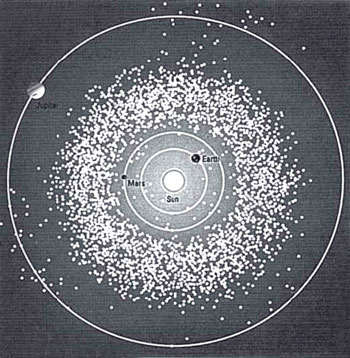
小行星带，位于火-木星之间
爆裂的冲击把冰彗星推向火星一侧，火星的大气层被强烈地破坏，变得极其稀薄，爆炸还导致火星被推移，轨道距离太阳更远了。
彗星的轨道被干扰后，继续冲向内太阳轨道，从当时地球的近点越过。两个星体间的引力干扰加上太阳的热辐射催化使得地球极其稠密的液雾大气层迅速极化，彗星上大量的冰被地球俘获，覆盖住了两极的开口，另一方面，地球上的大片陆地在液态大气稀薄后开始慢慢显现。
这之后，彗星成了太阳的第二轨道行星Venus（金星）。太阳的辐射气化了它的冰表面，浓密的大气裹住了这颗新的行星。而地球现在已经具备了可殖民的条件，许多从极化中活下来的两栖族类一些被运送到海王星Neptune上的新家；另一些，由于地球上形成了新的海洋轮廓线，而继续生活在这个新环境里。
一些住在彗星，即金星空心内部的蜥蜥们，转移到它的表面，建造了7个庞大的半球形建筑，分别对应蜥蜥族群结构里的一个阶层、派系。1980年代纽约一家报纸登载了前苏联的探测器深入金星的浓密大气下拍到了这些白色的圆顶建筑，它们中的任何一个都相当于一个小型城市的规模。
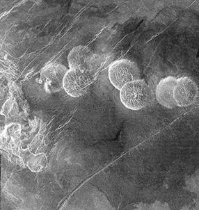
伴随着一连串的对这篇报道的攻击，一些美国科学家认为这完全是金星的一些自然地质风貌
这之后，蜥蜥把一个巨大的空心物体推动到地球的轨道上，开始殖民进程。这个空心物体就是现在的月球。传统科学家认为月球是自然形成，但月球永远只有一面朝向地球，它的自转周期（约30天）刚好等于它的公转周期，因此在地球上永远无法见到其背面（有意思的是，金星的自转周期（约243天）也几乎等于它的公转周期（约225天），唯一不同的是金星的自转和公转反向（太阳在那里是西升东落））。对月表进行的共振探测显示它符合空心物体的振动模式。如果是实心体，声音会极其沉闷。月球是空心球体。最近一份天文刊物说科学家将对月球重新归类，因为它被认为是中空。
蜥蜥们在地球上选了一块很大的陆地作为移民的开始，我们现在叫它雷姆利亚（Lemuria）文明或者穆大陆（Mu）文明。这是片相当广阔的大陆，位于现在的太平洋盆地，从日本一直延伸到澳大利亚，另一端从美国加州海岸一直到南美的秘鲁，这片大陆过去的中心位置在现在的夏威夷群岛附近。
蜥蜥们在这里发展他们的基于雌雄同体社会结构的文明，他们带来了一些生物作为他们的食物来源――恐龙。他们还创建了其他的动植物。本质上，生物在他们自己的环境里所创造出来的动植物都是他们自己头脑里一些意识的映射。因此蜥蜥族（Reptilian）会创造出爬行动物恐龙，而类人族（Humanoid）会创造出哺乳动物。蜥蜥和人类原本并不是作为这个宇宙的一个和谐意图而被安放在同一个星球上的，本质上他们就不是为了共生而设计出来的两个族类。
另外，蜥蜥和人类的思维机制完全不同。蜥蜥并不快速进化而是几乎保持原状，他们的扩张极其缓慢而稳定，深具耐性而且善于长时间的潜伏，他们在制定议程的时候会考虑很大的时间跨度。比如，动不动就花上几千年的时间来判断在某些区域和人类共生是否有利，这样的事经常发生。不管怎么说，地球毕竟是远离他们的 Draco帝国中心的一个新据点。
另一方面火星人和他们的“仇人”以及如今的“客人”Maldek人（Maldekian，-ian后缀作为构词法通常表示“-人”）一起住在火星内部，火星人需要采取一些措施，以防止不愉快的失控局面。因此，火星人向银河联盟申请转移这些Maldekian到其他星球。这个时候昴宿星议会也在向联盟申请把那些自私的Atlans驱逐出昴宿星团。
联盟随后讨论出一个平衡这个局面的方案：将Atlans迁移到地球上！这可以满足昴宿星人的要求，而且如果Atlans很好地
生存下来，那么Maldekian也可以被迁往地球。这样一来，人类这一方以及天琴人的后裔把他们内部的一些不被他们喜欢的派系都推给了地球上的蜥蜥殖民
地。联盟用这个办法甩掉了一个包袱，这个包袱将吸引蜥蜥的注意力。这样联盟可以争取到宝贵的时间来发展他们的军事力量以对抗蜥蜥们。
到达地球的Atlans在另一块土地上发展出移民文明，叫做Atlantis，亚特兰蒂斯。这块位于现在大西洋位置的大陆在当时从加勒比海湾盆地一直延伸到Azores和Canary群岛，它的西北边一直到现在的美国东海岸附近的Montauk位置。
善于技术文明的Atlantean（亚特兰蒂斯族类，移民后的Atlans在地球被叫做Atlantean）很快建立起一个影响力不断扩张的庞大帝国，那时候恐龙的数量也在迅速增加，越来越威胁到人类的生存。亚特兰蒂斯人开始猎杀恐龙，最终，蜥蜥们感到难以忍受。战争不久爆发，双方是蜥蜥里的Lemurian族类和人类里的Atlantean族类。
在此过程中Maldekian启动了移民地球的进程，他们建造了自己的殖民地，位于现今中国的戈壁大沙漠、北印度、苏美尔（Sumer）地区及亚洲其他地方。
在两个大陆的战争开始后，Maldekian被迫卷入，他们攻击了蜥蜥用来保卫地球免遭外部进攻的前哨――月球表面的基地。好战的Maldekian 还用激光武器轰击了Lemuria大陆部分区域，恐龙在这场战争里被完全灭绝。战争升级后Maldekian从地球的外太空攻击蜥蜥。Maldekian 同样需要一个没有蜥蜥干扰的生存环境。这场大战很可能是这个行星上真正的第一次全球战争First World War。
5、纷争与创建
地球需要有能容纳各方殖民计划的最起码的和平，于是，为了防止战事带来的破坏继续加重，一个来自仙女星系（Andromeda Galaxy，离银河最近的星系）Hatona行星的议会组织了一场会议。
会议由银河以外的一个中立议会来主持，因为银河系里的各方都多少牵涉进和地球有关的纷争中，有很复杂的利害关系，各方都想成为胜利者，不愿意轻易让步。
战争在太阳系里进行了很久，几十年里Hatona议会召集了多次大会来调解，在最终的努力下，冲突中的几支人类派系和蜥蜥殖民地达成了一个协议。但记住：只是地球上的蜥蜥参与了此协议，这和遥远的Droco帝国里的蜥蜥族类无关。
协议约定――一种新的类人族将在地球上被创建，所有对此计划有兴趣并且愿意开启这项新的和平进程的种族将用各自的DNA来共同创造这种新的人类，地球要为这个新种族划立出专门的区域。蜥蜥同意了此协议，前提是这个新族类必须以蜥蜥的身体作为DNA构建的基础。
这是为什么圣经Bible上说，“让我们以自己的形象来造人”(“Let us make man in our own image”)。这其中的复数形式暗示：它是一个集体的决定。
虽然以两性同体的蜥蜥身体为原型，新建立的人类种族依然需要两性的方式来繁衍，这就需要分离出不同的性别基因原型。这是圣经里寓意性的亚当和夏娃（Adam and Eve）的故事的由来，从亚当的一根肋骨上造出夏娃其实是从同性的蜥蜥身体分离出两个性别。这是为什么这个星球上所有人类都含有蜥蜥的DNA以及蜥蜥的一些特征，这是为什么人类的胎儿在发育成人类形态以前会先经历具有爬行族类的特征的阶段。
数千年里很多的基因原型被试验和发展。在Hatona议会的监护下，一些族类被创建，之后可能因为各个参与的派系并不认同而被毁灭。这是为什么地质考古方面的资料显示一些“人类始祖”突然出现而又突然消失。
12支类人族，1支蜥蜥族，这13支派系共同捐出了各自的DNA来进行这个计划。当时计划进行的地方就是现在的伊朗、伊拉克（Iran/Iraq）；还有如今的非洲一些地方。Atlantis和Lemuria大陆同样进行了这个新的杂交造人计划。有些痕迹至今可寻，例如北美的大脚野人（Bigfoot）、喜马拉雅附近的雪人（Yeti）、澳洲的红色土著、刚果的侏儒族类、非洲的Watusi土著。
非洲的新人种是由一颗叫Nibiru（或叫Marduk）的人工行星上的生物创建的，这些生物很像蜥蜥，他们建造了Nibiru来环绕太阳旅行。苏美尔人把他们叫做Anunnaki。
原笔记作者批注；在此我们可能要假设，AN家族，包括其中的Enki/Enlil（或者一些说法里的路西佛Lucifer、 大天使Michael、耶和华Yahweh）通过天狼星的飞船到达地球，随后带来了一系列的我们称为“The Return of
Enki” （Enki再临）的事件――伴随一场与Nephilim血系有关的基因灾难。像Sitchin这样的学者为我们加入了更多谜团-----例如为了维护Nibiru不受辐射而使用一整圈黄金沙来遮蔽这个行星的天空，它势必会导致一些引力扰动。Sitchin无法从苏美尔人的记载里找到线索――关于更大尺度上的星际政治是如何触发了Enki后来 在地球上的基因实验。
但这件事包含一个更大的玩笑：所有参与此计划的族类都偷偷地在自己的DNA 组分里编入了一些基因码，使得他们这个族类的基因能在新造出的人类上渐渐掌握支配地位。计划陷入了一种无尽头的纠葛中，人类被注定了这种命运，在反抗控制和被控制之间挣扎。没有哪一个派系能真正处于支配地位，这个计划在它开始之前甚至已注定了会失败。
在这种局势下，DNA编码向着专横和压抑这两种对立的频率两极不断极化，而这就进一步吸引更多的两极化的频率，尤其是那些本身就带有受害者意识的灵魂体更易被地球吸引。很多高级文明把地球当作监狱星球，灵魂来到这里本身就像是种刑罚，因此很多星球把他们的罪犯扔在这里。
每过段时间我们就会发现一些这样的灵魂体开始露出本来的面目，像Richard Dahmer,
Charles Manson, Richard Speck都是让人闻之色变的连环杀手或者变态罪犯，当然你不会忘了还有卓古拉伯爵Count Dracula
原笔记作者批注：沙丘Dune（一 部很有名的雨果奖科幻史诗小说，有同名电影）就是个殖民监狱，就像澳大利亚。地球非常符合此典型。像《沙丘》中描述的那样，在地球这口优胜劣汰的基因大锅中最强的DNA终于出现：看谁能免疫这场猎户座战争？计划好的吗？目前双方依然争执着要用互丢核弹的方式来表达对对方的不满，刚好在曾经的Eden伊甸园东部、我们今天所谓的中东冲突的位置，这简直是个标标准准的猎户座战争在地球上的微观版本，冲突中的各个银河势力都在地球上布局，大家都把地球当作解决星际争端的一个重要棋子。
这像茶壶里的风暴，如此大的规模发生在一个这么小的星球上，这些派系似乎将越来越使劲，如果他们在棋盘上走错步他们会倾向于更加直接的干涉。Enlil不会就这么看着，如果他的以色列被核爆给毁掉。（圣经密码里被预言到）。
像Wingmakers（Google Wingmakers，或者“造翼者”）说的那样，只有激活的能承受时间旅行的DNA才能对付这些掠夺型的ET。这些能时间旅行的基因是躲开Enlil的这帮蜥蜥血系家族（Levite）的关键，----这些蜥蜥被困在了他们自身的基因构型囚笼里。
蜥蜥们确保了新造的人种会永远被蜥蜥的频率影响，因为其底层的基因构型来自蜥蜥，新的人类能很容易地被蜥蜥意识控制。
Atlantean发现了蜥蜥的这个阴谋，于是用电磁武器猛烈地攻击蜥蜥的大陆Lemuria。这个大陆的大部分被破坏而沉入海面下，成为现在的太平洋。依然露出水面的部分是夏威夷，加州海岸，澳洲，新西兰，南太平洋岛屿、日本，菲律宾，台湾及其他东南亚岛屿。
剩下的蜥蜥逃到了印度北部，一部分逃到地球内部和金星，还有些到了中南美洲。地球内部成了大多数幸存的蜥蜥们的家园，他们进一步发展出庞大的地下文明。
从这里开始了关于地狱和居住在地底烈焰里的恶魔的传说。他们建造了管状的结构，里面能容纳极其迅速的交通器具，旅行到地球的任何一点最多以小时计。他们创建了许多著名地底城市---- Akkadia（中东）、Agartha（地心城市）、Hyperborea（传说里北极地下城市）、Shamballa（犹太人称为伊甸的花园，华夏人称为“西天”，西藏传说里的亚洲地底的神秘王国）。这些城市大多都建在地壳下面的内表面。
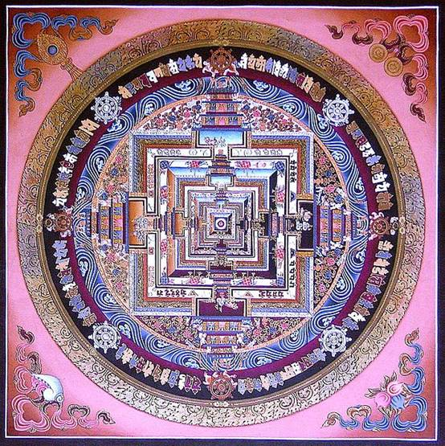
记住，空心地球不仅是理论而且是科学事实，源于行星被恒星抛出后的自转和逐渐冷却的过程。
原笔记作者批注：这里我们刚好可以参考《Agartha》（一本关于地心文明的书）的作者在书里谈到的内容。
最重要一个进入地球内部的入口位于北极，那里有一个1300英里的开口，在南极这个开口有950英里，这些都能从太空里看到。这是为什么航空公司或者私人的飞机被禁止直接飞越两极，原因不是因为官方说的那些所谓磁场对飞机仪器的扰乱。Admiral Byrd（ Google此人，有许多很详细的他的口述，包括他和“内地壳类人族“的详细交谈）在上世纪中叶曾驾驶飞机“误入”了北极的大开口，但政府后来掩盖了他当时的详细报告。
在地球中心或叫地核位置有一个能量球体，像是地心的太阳，自从地球形成之后就一直在那里。这个地心太阳的光效应与引力、大气的离心力交互作用，然后从开口溢出导致了”悬置“的极光。
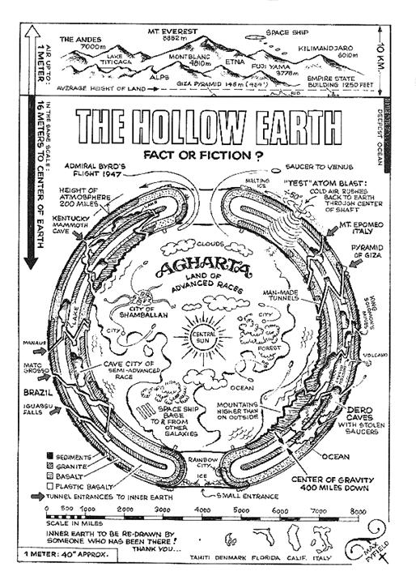
美国西部比如诺基山（Rocky Mountains）和Sierra Mountains也有许多通向内部的入口，另外阿肯色州的奥沙克高原（Ozarks Mountains）还有阿帕拉契山区（Appalachian Mountains）也有，但数目不是很多。其他地方比如阿尔卑斯山Alps、喜马拉雅Himalayas、安第斯山Andes以及加勒比海
Caribbean附近。海底一些区域也有，尤其位于一些很深的海沟，在太平洋、加勒比海、大西洋靠近Azores、Canary群岛的地方，还有马岛 Falklands。
上面这些地点都被当地政府或者 NWO(New World
Order）精英势力很严密地守护。还有些入口是人工的，在Denver丹佛机场下面，埃及的吉萨也有，还有一些位于全球一些主要的空军重地，亚洲印度和中国的一些寺庙也有。中国境内最主要的一个入口在陕西的金字塔那里，这个入口完全不被当地人了解，更不用说它是被禁止入内的。
现在我们再次回到那时的地球，当蜥蜥们都从地表撤离后，亚特兰蒂斯人可以开始更自由地控制这个新创建的人类的演化进程，类人族于是开始成为地球表面的主宰族类。亚特兰蒂斯人在几乎所有有陆地的地方都建立了殖民，他们还邀请天狼星人和他们一道来管理这个行星。他们还赶走了 Nibiru人，控制了Nibiru人的奴隶族类。他们在水里和地上创建了新的混血族类，其中一种成为了人鱼族Merfolk，这是种人和海豚的混血。海豚是从仙女星系被带到地球的，为了观察和监视地球上的各事件进程。
任何时候，只要亚特兰蒂斯人发现了地底蜥蜥们的某些活动，他们就用激光和电磁脉冲来杀死这些蜥蜥。不幸的是这慢慢地让地壳的上表层变得脆弱，而夹在地壳内部空间中的炽热岩浆让事情变得更糟。在时断时续几千年的武器干扰下，亚特兰蒂斯人的主大陆开始裂开和下沉，他们的文明因为陆地的毁坏也开始四分五裂，当恐惧和毁灭占据了他们的头脑，他们变得更加的不友好和好斗。巫师和使用黑暗魔法的祭祀从此开始取代那些科学和精神领域的领袖。
这个时候，大多数人已经提前意识到文明的毁灭已经不可逆转了。一些人开始迁移到现在的埃及、秘鲁、Appalachian山脉和欧洲西部。原来的亚特兰蒂斯大陆最终崩裂，沉入了地壳的上层。这个事件还导致了磁极的翻转，造成了后来知道的大洪水的传说，圣经和世界上几乎所有文化里都有提
到。
这场大灾难也为之后的人类计划提供了新的契机――各个参与的种族立即开始重建工作，人类被组织成新的不同的社会族群，成为了后来国家的雏形。
在这同时，蜥蜥们观察到一个好机会，并且抓住了它。
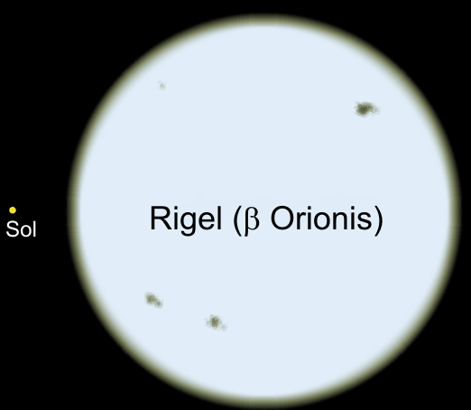
Rigel即猎户座β，但比猎户座Alpha更亮，因此是猎户里的最亮星，它是颗蓝巨星，
亮度大约是太阳的40000倍，上图是太阳和Rigel的体积对比
6、蓝血
地球内部现在成了蜥蜥们的大本营，他们在重新组织并伺机反攻，力图重新夺回地球表面。当时地球里的蜥蜥们成了一种被隔绝、被孤立的势力――从他们的天龙座家园被切除出去的一小块。蜥蜥的母船月球落入了人类手里，他们如今被孤立在一个被上面的其他族类仇视的星球上，他们需要保卫自己。
他们悄悄进行着一个计划，一步步地把他们的基因混入地表人类体内。由于这些人类的基因构型本身已经带有一定比例的蜥蜥的基因，所以蜥蜥很容易进入这些人类的意识场。混血人类的脑干已经被植入了蜥蜥的意识频率，包括大脑模块里一些专门的子区域。
蜥蜥们的第一个目标就是苏美尔人，计划开始在他们身上展开。苏美尔人大部分是火星、Maldek和天琴移民的后裔。蜥蜥们偏好金发蓝眼的族型，可以很容易地操纵他们的基因和意识。那时候很多苏美尔社会里统治阶层的人都被蜥蜥劫持，包括他们的长老和主持。
从这些被劫持的人身上，蜥蜥们开始了混血程序――历经数代人直到结果满意。蜥蜥的计划是达到人和蜥蜥之间50/50的基因比例，这样的混血产生出一个长得像人类的蜥蜥：可以轻易地从蜥蜥变形成人类，然后再变回来。变形术是通过将意识集中到某些基因开关上来实现的――根据具体的情况来任意掌握。
奇怪的是，实施这个混血计划的某些技术来自于天狼星。天狼星人的基因技术非常发达，他们精于基因型态学和意识编码，蜥蜥从天狼星人那里无条件地共享到这些基因技术。
混血程序完成了，苏美尔的长老们现在可以形变成蜥蜥族类，新混血很快成为了苏美尔文化里的高贵阶层。他们的血带有更多的蜥蜥基因，含有更多的铜元素。
血液里含铜的氧化物会呈现蓝-绿色系，这些混血又被叫做蓝血人Bluebloods。
原笔记作者批注：美国政府也许是现在这些蜥皮人（ShapeShifter，能形变成蜥蜥的人类）的总部。你会被那些军队里高层人员的细梭眼珠给震惊到：Norman Russbacher，Rupert Murdock，等等。我们强烈建议：新的选举投票必须要在至少20%的氧气浓度下进行，杀死这些蜥皮人！
蓝血人发现，50/50的混血比例使他们必须要内部通婚才能继续在下一代上保持这种形变能力。如果比例过多地倒向了蜥蜥一边，形变将更加困难，无法再继续
维持人类的形态。在这种情况下，他们发现摄取人类的荷尔蒙、肉和血液能帮助保持人类外形。维持人形是必要的，否则会吓坏其余的人口。
控制社会大众会变得更加容易和隐蔽，尤其是当人们普遍以为管理者都是自己的族类。蜥蜥的符号仅仅只在一些宗教或者传说中出现，一些雕塑里的神/女神的形态反映了蜥蜥们对该种文化的暗中影响，有些塑像甚至表现了怀抱混血婴儿的蜥蜥。
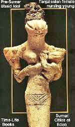
这些蓝血族类曾向天狼星人寻求保持他们人类外形的方法。天狼星人决定，造出一种新的动物来作为这些蓝血人补充荷尔蒙及血液的途径。这将更加隐蔽，不会让其他人类起疑。
那时野猪在中东地区是常被用来做祭献的，天狼星人用它作为这种新动物的基因基础，一些人类基因被掺入其中，新造出的动物就是家猪。蓝血族系用家猪作为日常的肉食品，这可以短时间内保持人类外貌，不过他们还是需要专门的用人做祭品的周期性的秘密仪式。
因为家猪是人和动物基因的混合，食用猪肉就是某种同类相食的残忍行为。这解释了为什么希伯来人Hebrew认为吃猪肉是亵渎纯洁。这也是为什么家猪被认为是地球上智力最高的动物，以及为什么猪的皮肤在烧伤病人的皮肤移植手术中被采用，以及为什么猪的心脏瓣膜能被用在人身上。很多癌症药物和化学品都要先用猪做测试。
家猪的频率或者集体意识簇对动物来说是一个完美的载体，是动物在进化过程里，在进入人类频率之前很理想的频率载体。事实上家猪可以被当作一种人性的型态，家猫也是一个例子，只是在低一些的层次上。
苏美尔文明随着时间慢慢衰落，然后渗入其他文化。浩大的迁徙扩展到了中亚的其他地方。这些外来的移民当然也包括了那些首领――苏美尔文明的蓝血贵族和皇室阶层。
这些苏美尔人之后被叫做苏美雅利安人，或者就叫雅利安人Aryan。他们广泛地扩散，足迹一直到了俄罗斯和印度次大陆。在印度北部他们遇到了深色皮肤的 Dravidian，Dravidian是雷姆利亚大陆消亡后一支残余的蜥蜥族类，雅利安人把这些Dravidian驱赶到印度中部和南部，他 们则控制了北印度，一直到喜马拉雅山脚。
雅利安的统治者们，蓝血族，大多成为了后来传奇或历史里提到的Sultan（穆斯林的苏丹封号）或Raja（印度的王公）。苏美尔人还建立了巴比伦王国Babylonia。
一些苏美尔人则迁移到高加索地区Caucasus，这成了后来的Khazar哈札尔人。一些蓝血族的首领继续向西行进到了欧洲，混入了现在所说的法兰克人 Franks、威尔斯人Cambrians、和日耳曼（Teutonic）民族所在的地区。这些地区被许多不同外星族类的文化所影响，像是 Antarian、大角星人、金牛座的Aldebaran（金牛座α，是金牛里的最亮星，也被称为Bull‘s Eye），鲸鱼座的Tau Cetian，还有其他天琴星人的后裔，比如Atlans。在地球上的Atlans成为了后来的凯尔特人Celt。
这里先停一下，之前说过蜥蜥的混血后裔苏美尔人到了中亚和中东地区，一些在高加索山脉演变成了哈札尔人，然后继续向西朝向欧洲，和当时那里的各种人群混
居。记住当亚特兰蒂斯（Atlantis）沉没的时候，一些亚特兰蒂斯人逃往欧洲西部，也成为后来的凯尔特人，还有些到了希腊，意大利半岛。
欧洲的这些人类在蓝混血族到来前就已经在那里了，在Atlantis沉没之后及蓝血族到来之前这段时期，很多外星的族类为当地的人口加入了他们自己的外星基因，发展出的文化都受到各自的故乡星球的影响。
蓝血族类的统治者们还渗入了中东人口，像圣经里提到的Canaanites、Malachites、Kittites。
天狼星人则在埃及重新规划亚特兰蒂斯人的后裔――被称为腓尼基人Phoenician。腓尼基人是金黄头发和蓝色眼睛，其中有些是绿色眼睛、红色头 发。腓尼基人殖民了中东沿海的区域还有不列颠群岛British Isles。他们甚至还殖民了北美大陆的东北角，一直到五大湖区域。现在北美的一些森林里依然可以找到他们当时留下的一些矿井和雕刻的石碑。
天狼星人还用基因技术创建了 古希伯来人Hebrew。后来的犹太人其实是希伯来人与苏美尔人的混血。犹太人之后到达了巴勒斯坦地区。巴勒斯坦，Palestine这个名字来自于一个在古代被叫做菲利斯人（Philistine）的族系，菲利斯人实际上就是腓尼基人。
所有这些都在巴勒斯坦沿海平原混杂在一起，形成了一种新的宗教，它的基础是牺牲和祭献给神，这个神的名字叫Elohim，信徒们也称他为God，一个复仇的外星统治者。
另一方面，印度那里的雅利安人渐渐和Dravidian混居在一起，一种新的叫做Hindu印度教的宗教开始兴起，它其实是复制了蜥蜥们塔形的7层等级体系，印度的种姓制度基本上是直接映射出了蜥蜥的社会功能运作机制。
当西亚和中亚在新的人种规划上忙得不可开交的时候，Rigelian正在帮助那些当初从Lemuria大陆逃亡到亚洲东部沿海一带的族系。猎户座的 Rigelian族类本身属于类人族文明，但当时已经被蜥蜥族类控制，他们在猎户座的故乡已经被蜥蜥渗透和掌控，而且后来被蜥蜥们完全同化掉了。 Rigelian协助地底的蜥蜥发展出带有蜥蜥DNA的混血族类。
类人族的Rigelian和蜥蜥的这个混血族开始在东亚建立皇室和王朝，主要在现今的华夏China以及琉球群岛和日本岛屿，这个混血族系相对于它的西方兄弟族系来说是个完全独立的血脉和文化派系。
在对控制欲的狂热追求下，蜥蜥们利用了这个看起来很复杂的牵扯各个星际族类的局势，当初12个类人族类都捐出了自己族类一部分的DNA，地表这些多样的新人类谱系甚至在总体上帮助了蜥蜥的全球布局---- 他们用挑剔的眼光监视不同的混血族群，思考哪个人种更适合将来作为地表的统治族类，哪个人种更适合充当服务阶层。所有人类由于带有蜥蜥的脑功能模区都能被
蜥蜥的意识频率所控制，但是有的人种与其他的相比更容易被蜥蜥们操纵。
在欧洲，蓝血家族隐秘而不知不觉地掌控了各种当地部落和社群，成为了国王和贵族统治阶层。他们完全渗透和破坏了牧夫座大角星人在那里的育人计划----Etruscan伊特鲁里亚人。蓝血家族在欧洲通过罗马人渐渐发展出了新的大帝国。之后，这些欧洲蓝血家族彻底吸收了Antarian在希腊的人种计划，他们进一步地通过罗马帝国试图开始全球化的统治进程。
蜥蜥们，甚至还侵犯了天狼星人在埃及的混血实验，他们把宗教植入那里的社会。
蜥蜥的这些蓝色混血人就像地球这位母亲的子宫内膜炎endometriosis，缓慢地发展到所有地方，通过蓝血家族的血脉网络实现权力的掌控。
7、其他的外星派系
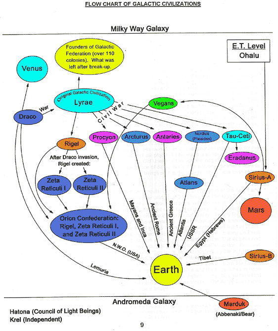
虽然蜥蜥是地球的第一批殖民，他们却不是唯一的干预人类发展进程的族类。一共有12个类人族参与了这个计划，再加上蜥蜥，人类混合了13种不同的基因形态。
这最后就变成了像是无任何游戏规则，每个参与者都可以任自行事的大混战。地球上的人类虽然都算是最初的天琴人及蜥蜥的后裔，但是各个子派系在文化和基因上 都分别被不同的ET派系操纵着。想像一个实验室的教授在离开的时候没有关上门，然后他的一帮助手溜进来把他们自己的基因加进这个实验，这是个形象的比喻， 事情处于无管制的失控边缘。
鲸鱼座人Tau Cetian的注意力放在了东欧地区，从现在的塞尔维亚Serbia到乌拉尔山脉Ural Mountains。他们影响了斯拉夫和俄罗斯人。那里的地理环境很像鲸鱼T的殖民行星Epsilon
Eridanus（离地球约10.5光年）。鲸鱼座人将自己的DNA掺入已有的人类原型，这就是我们现在称为的斯拉夫人。这种混合的结果就是敦实的身体和医学上的“桶胸”现象barrel-chest，斯拉夫人平均身高5英尺6-9英寸，骨骼密度非常大，眼睛很黑。他们很激进好强，偏好寒冷的气候。
这个鲸鱼座的混血族对灰人Grey种族和蜥蜥族非常凶狠，鲸鱼座的家园曾被这些敌人攻击过，他们的小孩被这两个族类劫持然后杀害。鲸鱼座人发誓要消灭掉这些灰人。
对鲸鱼座人其中一个星球Epsilon Eridanus的描
1950年代，当时的苏联政权Soviet Union与鲸鱼座人签订一份协议：准许前者使用设在塞尔维亚和乌拉尔山下面的ET基地。那以后，Sverdlovsk市被设立为了不让外部人进入的禁 区。Sverdlovsk市是以我伯祖父的名字命名的，他是苏联的第一个总统。
批注：Yakov Mikhaylovich Sverdlov的确是前苏联很重要一位布尔什维克领袖，他和列宁的关系非常密切，但他并不是正式意义上 的第一个总统――虽然很多地方都依然把他当作苏维埃的第一个总统。但苏联在宪法意义上正式宣告成立是在Sverdlov过世后。在10月革命之后一 直到他死前，他的确是事实上的党内第一号人物。 Yekaterinburg市后来在1924年被更名为Sverdlovsk以纪念他，但在苏联解体的那一年又被改了回来。不过如果不太苛刻的 话，Swerdlow的伯祖父叫第一个总统也不错。
从1958年到80年代，许多对公众有辐射危害的实验都在Sverdlovsk市进行。60年代初美国的一架间谍飞机在那里被击落，美国显然很想了解那里到底在干什么。
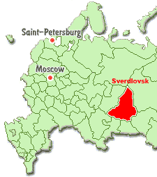
在欧洲中部，来自Aldebaran星的金牛座人操纵了那里的德国部落的基因。金牛座人非常有智慧，侧重于科学技术，他们也属于金发蓝眼的人类种族，只有 很小的比例是深色头发和淡褐色的眼睛。他们的社会结构是军事体制，保持自给自足的生存法则。在几乎2000多年的时间里，金牛座人一直同德国民族保持着基 因上的联系，金牛座人利用通灵的方式给他们传达信息并且调动这整个国家的集体情绪。
很多携带金牛座人意识频率的德国人后来和斯拉夫地区的鲸鱼座谱系混血，尤其是在波兰和俄国。希特勒Hitler知道这件事。这是为什么他如此坚决要入侵这些国家并把他们合并进他的帝国。
希特勒只算是半个德国人。他的父亲是奥地利一个有钱的犹太商人，他母亲是一个在家的女仆，她和房主有过出轨的行为，房主的妻子发现后把她撵了出去。他父亲一点都没有帮她。希特勒为此痛恨犹太人，要消灭他自身带有的这支基因谱系，本质上他痛恨他自己，但另一方面，他的意识频率是被深深地控制了。
维京人Viking的基因也受了金牛座人的影响，这些北欧人类于是有了好斗的习气，这点和德国一样。后来这些北欧的海盗们到处掠夺和蹂躏欧洲的土地长达几个世纪，但他们缺乏先进的技术能力来稳固他们的势力。
意大利半岛上发生过一次偶然的基因干预，在大约3000年前。一艘来自大角Arcturus恒星系的飞船坠落在伊特鲁里亚地区Etruscan。这支ET非常具有灵性，他
们放弃了回到母星而呆在地球，慢慢和当地人混血，这些后裔就是之后的罗马人，罗马人后来再被亚洲中部的混血人类影响，血缘进一步混杂。
来自Antaries的族类操纵着古希腊的基因。Antarian属于类似同性的社会形态，女性在那里仅仅作为繁衍的一种途径。事实上在我所知道的 Montauk项目里就有些Antarian观察员，他们对性别中的可编程行为感兴趣，因为这些程序和Wilhelm Reich（瑞希在生命学和性学上有颇具争议的开拓性创见）的那些理论有关。
Antarian皮肤很暗，近似褐色和橄榄色，眼睛深褐，身体形态矮而纤细，他们星球的巨大引力给了他们一套神奇的肌肉系统，所以在形体塑造上很有名。
这个希腊&Antarian的混血族殖民了西班牙Spain和葡萄牙Portugal，其后裔进一步和罗马人、阿拉伯人混血。阿拉伯人大部分 是苏美尔&蜥蜥谱系。这些混血又殖民了中、南美洲，和当地属于亚特兰蒂斯人&小犬座谱系的印第安部落再次融合。
小犬座的南河三（Procyon）双星系统并没有多少技术，在Atlantis沉没后，为了保持地球上一定的存活率，一群小犬座人被带到了地球。他们就是后来的玛雅Maya、阿兹特克人Aztec和印加人Inca。 他们被指派到曾属于雷姆利亚人Lemurian和亚特兰蒂斯人Atlantean的许多在美洲的小聚居地，主要都位于墨西哥内的Andes和Sierras山地。他们重建前文明 的努力并不太成功，包括模仿出的许多金字塔形建筑，包括使用医疗程序来治病，甚至还包括祭献蜥蜥的牺牲仪式。这是为什么他们的传说里提到那些白色的红发人
坐着战车返回然后把他们带离地球。
美国西南角的Anasazi印第安族也来自小犬座的Procyon，天狼星人直接负责了这次星际移民传送，他们把一些希伯来人也带到美洲西部。古希伯来人的硬币在墨西哥和美洲其他地方都有发现。
几千年来国家的演化、殖民地的扩张、战争、饥荒把地球人口丢进了一个大熔炉里。各个基因链连续不停地分开、重组，混合，相对纯种的人类寥寥无几了，基于同种或者同文化而联合起来的团体更容易被集体控制。
另一方面，华夏的版图在亚洲东部不断扩大，印度的Dravidian&蜥蜥为基础的文化被来自亚洲中部的雅利安游牧民族取代。在南美，印加帝国因为小犬座基因的混入而进入了繁盛期。
同样的基因杂合发生在北美和中美洲，涉及到托尔特克人Toltec、玛雅人和阿兹特克人。所有这些部落都有牺牲活人的血祭仪式，这暗示了小犬座人本身就已经被蜥蜥一族征服。注意：所有中南美洲的文明都使用蛇和蜥蜥的图形作为一种象征符号。
这些土著有着独一无二的混合基因，包含了雷姆利亚人&Draco谱系、亚特兰蒂斯人&类人族ET谱系、以及额外的小犬座Procyon基因谱系。
描述中的Procyon双恒星系统的行星
8、水晶头骨
当初仙女星系的Hatona议会召集各个种族来商讨地球人类的发展计划的时候，他们已经在思考两个问题，第一，当地球人类自由发展起来后他们如何知道自己是从哪里来的呢；第二，如果没有外来的干涉，他们如何能刚好踏上正确的方向呢。
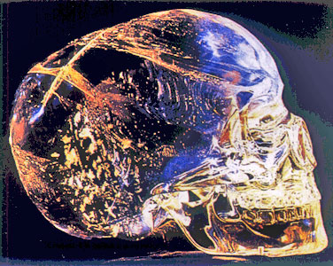
他们选择了一个看不出任何种族特征的女性头骨作为这个物体的形状来源。这个头骨因此代表了所有地球上的人类种族，象征着和睦的人类大家庭。选择女性这个性别是因为在物理现实中女性象征着“战胜了自我中心的价值观（ego）”。
选择水晶作为此头骨的材料是因为它代表了物质层次上可能承载的最高振动。――纯洁、清晰、专注、以及放大。可以移动的下颌暗示了头骨是种信息交流装置。ET将水晶头骨留给了第一批天琴后裔的亚特兰蒂斯文明，在漫长的岁月里头骨被放在一个金字塔神殿里持续地充能。
天狼星人渗入第二代天琴后裔&亚特兰蒂斯人谱系的亚特兰蒂斯文明，他们和亚特兰蒂斯人协商，希望能研究这个水晶头骨。然后他们复制出一个一模一样的头骨带回了天狼星A。其他的外星派系也据此作出了他们自己的复本（但属于次级），这些后来的其他头骨被不同的派系用到他们自己的混血计划上。到了第三代的天琴后裔&亚特兰蒂斯人时期，水晶头骨的真正意义几乎开始被人遗忘。
掌握权力的人试图用头骨去做一些负面的事情，没有意识到头骨会放大这些负面因素并把它们反弹回来。这是因为水晶头骨是以这样的方式被造出来：在它的一定范围内，你头脑里的想法将会反弹给你自己――以致变成你的实际体验。头骨教导我们，物理现实是意识的镜像。
亚特兰蒂斯沉没时一些大祭司把水晶头骨带到了中美洲----小犬座人的移民玛雅人的地区。头骨在那里被供奉起来当作圣物直到后来玛雅消亡。这之后水晶头骨一直埋在遗迹里，直到20世纪早期才被重新发现，或者说，直到水晶头骨同意她自己被重新发现。
交流者用颜色、音调、原型archetype的三合一方式来和水晶头骨“对话”。在她面前，任何这三种方式的混合形式都将形成一种频率共振来开启头骨内相应的程序。
无限种混合形式都能被应用，任何一个人都能开启水晶头骨里的信息程序来让人类获益。左半脑代表语言逻辑，右半脑代表纯想像。而大脑里的松果体使用原型来协调和解读左右半脑。
原型可以是几何图形、字母、数字、古希伯来符号、象征图像、或者这些东西的组合。颜色也是此三合一的一部分，颜色有它们自己的语言。左半脑是暗，右半脑是 光，于是松果体再次登场，通过颜色信息来协调和翻译两个半脑的这些混色。声调和音乐是一样的道理。水晶头骨利用同样的法则来协调意识mind和现实reality。
在一些时候，水晶头骨会变得失去物理形态，因为它不是从一个物理实体里被造出来的。这象征着物理实体的非必要性。水晶头骨是不同的存在维度之间的桥梁。
任何洞悉了光、声、形之交流法则的人将获得无穷的力量和知识。
9、古希伯来人
绝大多数今天的犹太人和中东地区没有任何一点基因联系。严格说犹太人包含了许多个族型，不少种族的特征都能在不同的犹太人身上看到。这说明他们并不是一个纯粹的种族，而是靠着相同的信仰而维系在一起的多个文化的集合。亚伯拉罕Abraham出走乌城（city of Ur）来到迦南Canaan的故事实际上讲述了蜥蜥混血族离开苏美尔边境进入中亚和中东。目前在欧洲和美洲的犹太人，其基因可以一直追溯到哈札尔王国 （the Khazars，也叫Khazaria，后来在公元8世纪左右哈札尔人抵挡罗马天主教会的影响而开始转向犹太教）。
意大利的 Pavia大学在2000年作了一份关于欧洲人的基因研究报告。80%的欧洲人血统来自中亚，其余20%来自中东。这份研究可以支持这个结论：当时的苏美
尔人进入了中亚，然后再迁移到欧洲和中东地区。这同时说明人类祖先来自非洲的理论站不住脚，亚欧和非洲之间没有什么基因联系。
古希伯来人和现在的犹太人没什么血缘关系。希伯来人是天狼星人在埃及孕育的种族，混合了天狼星和天琴的基因。这些人类高大有力，他们说着天狼星的语言，也就是古希伯来语。历史学者都认为古希伯来语是突然冒出来的语种。
古代的巴勒斯坦人说阿拉姆语Aramaic，阿拉姆语后来演变分化成了阿拉伯语Arabic、波斯语Farsi、和其他几种中东方言。最开始，埃及社会中仅有神职人员和秘密团体才使用希伯来语。渐渐地，希伯来语和阿拉姆语融合在一起。
希伯来人在埃及其实是有报酬的工人。他们到了迦南，吸收当地文化纳入埃及文明。他们和那里的苏美尔混血部落一起居住，也开始了血祭仪式。所有这些新吸收的，再加上古埃及、亚特兰蒂斯、天狼星人的信仰体系，最终形成了犹太教的雏形。
出埃及记的故事（the Exodus）其 实是关于地中海东部的圣托里尼岛(the island of Santorini）地震火山活动而造成的一系列灾难。火光染红天空，倾泄进海里的岩浆映衬出血红色的海水。火山灰和喷射的岩石酿成了埃及的灾难。大量居 民逃离到其他地方。红海的一条海脊在这场地震中被拱起，慌乱中一些人群以为这是神的指引而选择它作为逃生的途径，但它很快再次沉入海面。
十诫（the Ten Commandments）里被编码的真正信息被传达给了这些出埃及者。一些人突然不由自主地开始讲述这些信息。这其实是一种心电感应的交流机制。在这个例子里，一些意识程序被电磁活化，DNA突然开始能够识别这些信息编码，于是一些指令被传达然后被记录下来。这些指令是被设计用来控制这个派系的实验和计划的发展方向。
之后，中东成为了天狼星人和他们的一支蜥蜥盟友的焦点。为了更加轻易地控制全球，他们计划共同构建出一个新的宗教和文化版本-----意识编码某个游牧民族，并让它把这种宗教和文化带到地球的所有角落。
任何时候这个实验变得有失控的倾向，某个相应的监护者派系就会加以修正。举个例子，大多数人很熟悉罪恶之都索多玛（Sodom）和蛾摩拉（Gomorrah）的故事。――其中一支人类实验出了意外，这些人很难认同两性繁殖的观点，由于受意识编码的影响，倾向于喜爱同性。
为了消灭这些人口，一种病毒被故意散播出来，但它很快传到了其他地区，这引起了监护者们的担忧。他们派了两个代理人前往，看看是否能救些人。当地的居民叫她们天使angel，因为她们的金发、蓝眼还有完美的身体。
罗得（Lot）和他的妻子把两个天使带进了家，部分出于保护的目的，因为城里几乎所有的男性都想和她们交欢。很快，索多玛和蛾摩拉都被摧毁了，辐射今天还能检测到，峡谷里还可见融掉的岩体。索多玛和蛾摩拉是被核力摧毁的。
60年代早期以色 列科学家在曾经的索多玛遗址挖掘时发现了被埋在岩石里的骨头和身体组织的残骸，随后美国科学家也被叫去，因为他们有更好的设备。他们在残余的组织里找到了 病毒的样本，再用另外的活细胞核重建出这个病毒。1967年在圣路易斯医院一个快死的病人身上他们悄悄地测试了它，病人最后可怕地死去。这个病毒被称为AIDS（艾滋病），Acquired Immune Deficiency Syndrome，它能瘫痪病人的免疫系统。美国方面的研究结果很明确：这个几千年历史的古老病毒是用基因技术造出来的。
古代希伯来人的宗教是下面这些体系的集合――苏美尔&蜥蜥宗教体系、古埃及&亚特兰蒂斯&天琴座宗教体系、在迦南融合进来的蜥蜥子文化部落中可接受的一些教义体系。这个集合包括了人血仪式和祭献活人仪式，这是为什么会有亚伯拉罕被告知要在祭坛上献出他的儿子以撒的生命来取悦上帝这样的情节。这种象征符号之后因为宗教目的常常被运用。
希伯来语成为一种真正的大众语系是在希伯来人离开埃及之后。最初它仅仅用在神职人员的一些宗教仪式上，其中有很多术语和名字都来自埃及。Moses摩西这个名字，其实是产生于埃及的秘密金字塔教会给予某种能职人员的封号――Moshe，意思是“身上涂了尼罗河鳄鱼油的人”。
原笔记作者批注：Swerdlow在这儿很可能没有说对――学术方面的证据指明了摩西其实正是法老阿赫那吞Akhenaten。希伯来主要的宗教仪式的确来自埃及，这点他说对了。
Enlil派系的祭司们和Enki派系的阿赫那吞法老之间（关于教派改革？）的争执也许是反映更大尺度上的交战。Enlil想要更多的蜥蜥&Draco宗教体系，Enki，这个来自天狼星的叛变者，想推动他自己的基因实验，为了从之前的Nephilim基因灾难中恢复过来。
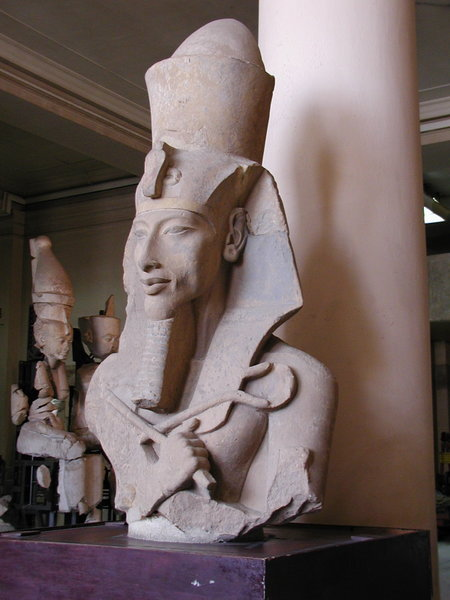
法老阿赫那吞塑像
这个宗教仪式是在胡夫金字塔（the Great Pyramid）的国王室里进行。
希伯来语里这个词的意思是”来自水里“，暗示了和鳄鱼有关联。埃及语里”鳄鱼油“这个词是Messeh，这是Messiah弥赛亚（即救世主）这个词的源头。将鳄鱼的脂肪混入一种油里然后涂抹到身上，这可以吸收持久有力的爬虫族的能量，这种能量最终可被身体完全汲取消化。Moshe，或者Moses，是仪式上的封号，并不是一个人名。
这是完全合乎逻辑的――某个Moses封号的祭司在当时那场灾难下带着大批的人逃到一个安全的地方，另一方面，当时的天狼星人，这些埃及的监护者们，完全有理由将他们的混血成果，这些希伯来人，转送到西奈沙漠（Sinai desert）的安全之地。
这之后，摩西五经（Torah）被传授给这些人们作为生活的信条。摩西五经是被加密的律书，只有今天的计算机科技才能对它进行解码。另外，迦南这个地方需要被征服，然后为新的族系提供发展空间。希伯来人事实上是相对更新的实验族系，一些老的版本要么将被清除要么被同化。
希伯来人把被编码的律书装进了约柜Ark of the Covenant，一个只有祭司才能碰的东西。60年代的时候明尼苏达大学试着重建出这个约柜，他们准确地参照了圣经上的相关描述，结果造出来的东西蓄电性太强他们只得把它拆掉。
这是为什么古代希伯来大祭司们要独自一人进入约柜区域，出于安全考虑；他们还必须穿上非导电的白色麻棉织物，还要一个特制的胸甲作为保护性的电磁挡板。约柜是种沟通装置，这是为什么只要祭司来到它的附近就会接收到上帝的讯息。
约柜还可作为一种定位器，为太空中的ET提供准确坐标。约柜最初放在胡夫金字塔里用来聚焦能量，然后被交给希伯来人保管，从埃及到了迦南，再到埃塞俄比亚Ethiopia，又再回到以色列，最后回到埃及，现在正放在金字塔下面。
事实上有两个约柜。
另外一个在耶路撒冷Jerusalem
原笔记作者批注：我们觉得这里信息还不完整――很清楚的是，约柜是利用分形原理组装起来的电容器，它高密度的蓄能可能产生一些辐射。它需要大量地充能――因此它必须被放置在地球主要的能量节点/线上（leyline）。
10、Anunnaki与黑人
黑人的创建者，来自Nibiru的属于蜥蜥谱系的Anunnaki，乘坐着Nibiru这颗人工行星在椭圆的轨道上绕日运行，它的公转周期有好几千年。2003年他们再次到达地球。
Anunnaki喜欢制造奴隶种族，通常为了特定的目的，以某种现成的动物为基础创造出新混血。在地球上，他们利用猿猴的基因造出了一种奴隶人类用来在非 洲挖矿。这种人类被设计成能忍受湿热的气候条件，寿命很有限。一些疾病被编码进他们的身体，防止他们进一步地发展文明，他们为了生存必须依赖他们的创造 者。这是为什么在其他所有种族的基因记忆里黑人是奴隶。
美洲、欧洲的光明会Illuminati后来决定用AIDS病毒把黑人从这个星球上抹去。光明会认为，如果黑人消失了，Anunnaki也许就失去了继续操纵他们的黑人的动机，这样就不再妨碍光明会的计划。东非的绿猴很快染上了AIDS，接下来是海地Haiti。在非洲AIDS利用性途径传播。
世界卫生组织WHO也参与了此计划，利用疫苗作为AIDS的载体。
原笔记作者批注：1971年的数据图表清楚地反映了当时的美国特别病毒程序（US Special Virus Program）的动机和目的。还有，联合国艾滋病规划署（UNAIDS）的执行董事Peter Piot说AIDS病毒的诞生经过了实验室里的很多工序，这不是什么意外事故。1971年的这份数据显示了无可辩驳的证据――美国在试图谋杀它自己和其他国家的公民。
但事情总会有意外。一位法国-加拿大航班的乘客，一个同性恋者，在非洲与一个双性恋者有染。得知自己被感染后他极端愤怒，报复性地开始继续传染给其他人，纽约和旧金山是他的两个主要目标。这显然是计划范围之外的”事故“，光明会也有想不到的时候。
按照计划，在2003年Nibiru回来前大部分的黑人会被感染上；剩下的会有埃博拉病毒Ebola、战争或者饥荒等着他们。
多数加勒比海附近和北美的黑人带有很多欧洲人的基因，不被认为是合适的奴役对象。
1999年有报纸报道美国的天文学家探测到冥王星Pluto轨道外一个巨大的行星，和9大行星不同的是它有一个相反的公转轨道；通过进一步的计算，它会在2003年左右到达近日轨道，相当接近地球。
这个消息很快销声匿迹了。再也没被提到。
Nibiru上面的蜥蜥族系似乎从某个时候开始没再管理过他们的黑人，黑人被扔在这里，现在似乎一切靠他们自己。Nibiru上的Anunnaki离开了 地球，继续着他们漫长的椭圆形轨道。每隔大约12000年他们就接近一次地球，上一次他们的返回大约是在公元前10500年，Nibiru的引力扰动和
Atlantean的水晶实验可能产生了意外的叠加效应，地球的磁极被翻转，这是Atlantis沉没的一个原因。
Anunnaki还在地球附近设有监视飞船，即使他们在很远的轨道上也能了解情况。这些船员中有的像是侏儒型的熊，非常凶狠，在过去曾攻击过人类，它们是合成的电子生物，脑里有植入物可以被远程控制，身体是生物组织，异常强壮。
这些侏儒熊在60年代后期开始出现，政府释出的一些UFO报告提到了它们。离它们远一点，这些熊非常危险。它们很可能更多地出现在非洲，为它们的主人收集黑人的一些情况。路易斯・弗拉克汉（Louis
Farrakhan）这位黑人宗教领袖（Black Moslem or
Black Moslim）经常谈起他和UFO的接触，他说自己被这些ET告知――黑人是他们创建的。
这些ET进一步告诉他，黑人必须自主地发展，决不要被其他族系干涉。
11、用宗教进行意识控制
地球上第一个宗教是由Lemuria大陆的蜥蜥族殖民者带来的，他们信奉一种带有等级观念的神圣意识God-Mind，Draco帝国由几种不同的蜥蜥类型构成，每一种在这个等级制度下都有相对应的特定功能，每个蜥蜥个体都知道自己在这个等级中的位置，并为此感到荣耀。他们尊重各个等级间的界限，触犯这些规则的后果是死亡。
蜥蜥们通过集体意识来操作――意思是某个蜥蜥对他自己没有决定权，只有较上层的，或者带翼的类型，才表现出一些个性，这些上层的类型是首领。
这套思维体系被带进了苏美尔文明，等级制被作为宗教结构注入社会。记住这些苏美尔人当时是天琴座、火星、Maldek的移民。他们像Atlantean亚特兰蒂斯人一样保持着以前天琴文明的信仰体系。天琴文明推崇个性发展，并且主张通过服务他人来提升自己的成长。天琴星人也相信这个宇宙有她自己的神圣意识God-Mind，在他们的文化里红色头发的天琴人被看成是先知――能与神圣意志直接对话的人。
蜥蜥们崇拜那些来自星光层的透明族类，他们是蜥蜥的创造者。这个透明族类通过一个群意识（mass consciousness）联系在一起，类似一种超灵体Oversoul。他们本质上没有性别，虽然在物理层面，他们显化出的一些特征因为看起来线条感很分明而像是雄性。
蜥蜥们把等级思想介绍给苏美尔族，当然他们做得很小心，为了让苏美尔人更容易接受――第一步，他们将很强的性观念植入这个人口，苏美尔人慢慢变得过于强调性别在社会结构中的作用。接下来，蜥蜥们再慢慢地把恐惧植入人们的意识中，人们会开始害怕，从而很容易被控制。蜥蜥们很聪明地建立出一种宗教，它基于男性和女性、神和女神的控制体系。这个体系里的神被称作Nimrod，女神被称作Semiramis，他们被认为是半人半蜥蜥的神，他们的外貌被故意设计和描绘得很可怕，人们就更容易臣服。
Nimrod和Semiramis最终演变成埃及的冥王Osiris和他的妻子生育女神Isis，还有希腊的阿波罗Apollo和雅典娜Athena，还有其他许多这样的例子，都是男性/女性、神/女神的主题，这其实代表了蜥蜥雌雄同体的源头还有人类原型的分裂――变成亚当和夏娃，变成男人和女人。
因为这些蜥蜥的显化形态很像雄性，虽然他们自己其实是双性的，蜥蜥们于是偏爱用有力的雄性来控制雌性。苏美尔的神Nimrod头上有三只角，蜥蜥用这三只角来象征他们的双性同源。
它其实有很多含义：
・
阴茎和两个睾丸
・
两种能量合起来创造第三种，比如，人类原型
・
三个存在层次：超空间Hyperspace、星光层、物理层
・
三个知觉层次：意识、潜意识、超意识
・
双性同体产生出雄性和雌性
因此，在地球上数字3对蜥蜥来说有很重要的意义。他们在很多地方使用这种象征符号，而且不少是在人们的日常视野之内，例如那些标志性的百合花图案；他们还用蝎子来代表，因为它的两只钳子和带蜇的尾巴。
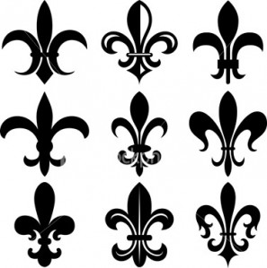
蝎子的高级版本则是老鹰（或者金雕），它代表蝎的进化形态。因此，鹰可以表示从较低形态上升到更高形态，它代表权力和全球化，它是一种猛禽，可以扑食所有它下方的一切。这是为什么罗马军队里要使用鹰的符号，无论任何时候他们攻入一个城市或者邦国。
大多数的人对于鸟类是爬虫纲恐龙的后裔完全没有概念。许多公司的标志Logo还有今天那些小说、电影里长着翅膀的形象都和这有关。翅膀也代表那些带翼的蜥蜥首领，在蜥蜥或者光明会里属于很高的阶层。
在大陆的另一头，Lemuria文明的后裔在华夏创建了一个男性统治的王朝体系。在这里，皇帝总是有一个和他对应的皇后。人们被告知――皇帝和皇后是上天的神之后裔，龙dragon是这个王朝体系的核心符号，龙本身也是蜥蜥族类里的一种标志。这种王朝模式统治了几千年，基于森严的宫廷集权。
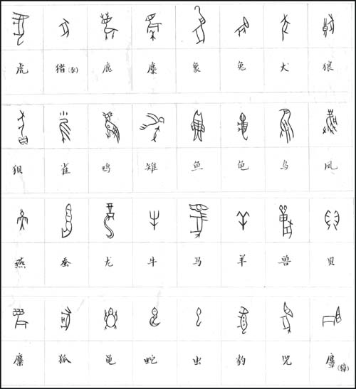
华夏的象形文字――商代甲骨文中的“龙”字
华夏人的皇帝信仰（或叫天子，the
descendant of the god in skies）扩展到整个亚洲东部，同时苏美尔自己的版本――男/女神宗教体系一路迂回曲折穿过中亚和西亚大陆。所有这些宗教的传播都是地底的蜥蜥族类们精心操纵的结果，西藏Tibet的地底有他们其中一个主要的地下城市。看看世界地图吧，西藏所在的位置从地理上说很明显是一个最佳的选择，它几乎能辐射到这块大陆的所有区域。亚洲地底的蜥蜥们得到过天狼双星B的帮助――天狼B星人在亚洲发展出佛教思想体系Buddhist philosophies――另外还有一群叛变的天琴人试图在蜥蜥们的控制之下重建过去的天琴文明，真是怪异的组合！
与此同时，从之前的Lemuria大陆逃出来的一些蜥蜥在印度建立了种姓等级制，它是蜥蜥等级制的一个复本，从最底层的贱民Untouchables到最上层的祭司阶层婆罗门Brahmin――这套体系随后完全被本地化了，印度最古老的宗教文卷吠陀Vedas在这种文化气氛下出现，一些神庙开始建造以祭拜他们的神。
而埃及人――亚特兰蒂斯人Atlantean&天琴人Lyraen的后裔――正在从失落的亚特兰蒂斯及天琴文明的废墟里重建新的埃及文明，天狼A星人提供了帮助，因为他们之前就和Atlantis亚特兰蒂斯有往来。
前面提到俄塞里斯Osiris和伊西斯Isis是埃及两个有着蜥蜥渊源的主神，埃及人还采用了他们自己的一套万能的方案来搭建出整个主神体系――引入极其丰富多彩的各种杂交的半人半动物形象。这是从前亚特兰蒂斯的杂交实验之痕迹反映到了埃及的文化中，天狼星人进一步巩固了这套强调混血和杂交的主神体系，便于蜥蜥族的控制。
以前的亚特兰蒂斯人继承的是天琴人的信仰，非常地根深蒂固。蜥蜥们花了很长的时间不过才渗透了一两个文化据点。但随着那块陆地的沉没，这些后裔完全被分散失去了凝聚力，渗透变得更容易和迅速。
猫，作为某种角色，这个时候开始进入视野
在天狼A星系统有个叫Khoom的世界。埃及的古名叫Khem，于是有的研究者说墨西哥和埃及有某种联系，因为墨西哥的坎佩切湾（the Bay of
Campeche）译成是the Bay of Old Egypt，古埃及湾，这就暗示埃及和尤卡坦半岛有一定联系。但这不对。
常和亚特兰蒂斯人往来的天狼星人用他们故乡的名字命名了那个地方，后来这些后裔在埃及建立新文明，这个名字于是被天狼星人移到埃及。
原笔记作者批注：我们获得的信息是埃及这个名字KHEM可能来自the
BLACKNESS（黑！），Thoth/Enki/Ra派系创建了一支基于黑铜血系的努比亚人Nubian谱系。其中一个证据，黑人的祖鲁文化Zulu里很多痕迹显示了他们自己的基因源头和Enki（大多认为Enki就是埃及的太阳神Ra）及他的儿子Thoth（埃及的智慧神，头部是鹭或者狒狒）有关。KHEM还隐含黑洞（black
hole）的意思，然后有了单词alCHEMy（炼金术）和CHEMistry（化学）――关于如何激发DNA的聚变Implosion从而创造出微型黑洞（某种原子价的金元素可激发此过程）。因此炼金术的核心是激发DNA的聚变。
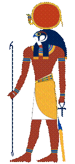 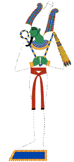 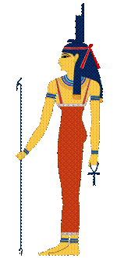 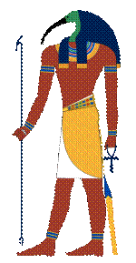 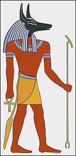 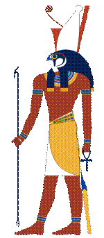
上列：太阳神Ra、冥神Osiris、生育神Isis
下列：智慧神Thoth、死神Anubis、守护神Horus
天狼A星还有个行星叫Kilroti，天狼星人在上面造出了像猫一样的高智慧生物，叫做Lion People，狮人。七八十年代的时候政府做了一些儿童卡通片描述了这种生物。
在星光层上有些以以太密度存在的狮人，金色，有翅膀，眼睛是紫色，这种狮人叫Ari。古希伯来语里的狮子就叫Ari，他们的振动频率强过海豚。
Ari族类建立了Ohalu议会管理天狼A星系统。
原笔记作者批注：有意思，Anna Hayes（安娜・海伊斯，原名Ashayana Deane，《旅行者》Voyagers系列作者）刚好也提到过狮身人面像Sphinx之所以是那样的造型是因为――属于Anunnaki族系的Nephilim，这些干涉主义分子们的星际长老都是Leonine族（一种像猫/狮的种族）。因此这些”堕落“的Anunnaki说他们的神就是狮形的生物。如果敌人的神比你的神要厉害，那么你在战斗中会很不妙――于是你建造出sphinx，以此证明强大的神（天狼星的狮人长老们）站在你这一方。
把天狼星人的基因和Ari族的能量加以混合就造出了Kilroti族类。这种生物被带到埃及。当非物质态的能量下降到物质频率，DNA也会相应地显化以构筑肉体生命。
接下来再加入人和野狮的DNA，这就是地球上的家猫。在古埃及，猫几乎被送到每一户家里，它们被编码为夜里出来，向主人，那些外星操控者，通报情况。这是为什么直到今天猫依然有夜晚出来的冲动，这是为什么猫被认为能通灵但对人又很冷漠。
进一步，天狼星人把猫塑立成一个偶像符号并植入埃及的宗教系统，以此来确保这种永久性的刺探机制。狮身人面像还被天狼星人注入了象征意义――人的基因和狮子频率的混合，这种象征可以从能量层次上把这个文明的未来和天狼星捆绑在一起。Sphinx像最初被设计成朝向每天天狼星升起的地方，Sphinx的脸和火星上的人脸几乎完全一致，两者彼此遥遥相望。
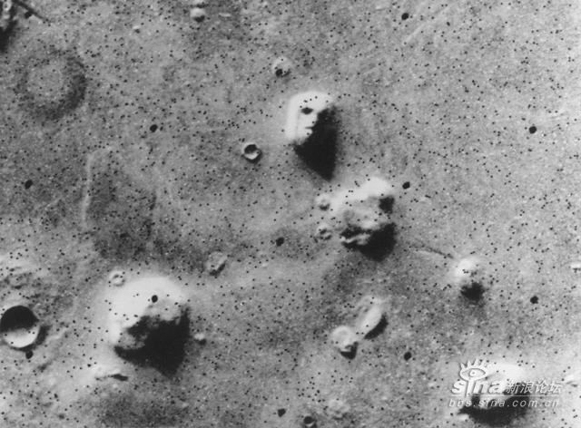
火星上Cydonia高原的复杂工事是用天狼星人的技术修建的，那是在最开始一批天琴座的后裔到达火星的时期。如今的火星人也许对天狼星人和蜥蜥族之间的联系毫无察觉。
亚特兰蒂斯被毁灭后，一批金字塔开始建造，它们都是某种能量节点。这些金字塔下面是同样规模大小的”倒立“的金字塔，两个底部合在一起，组成一个八面体。他们的中心是一个正四面体。正四面体被认为是神圣意识(God-Mind）的原型符号。任何东西被精确地置于它的中心都将获得绝对的保护。八面体在Montauk工程里是一种Delta-T天线球的形状，如果用恰当的光编码对它进行充能，可以在维度之间撕开一个裂口，创造出维度涡旋和虫洞wormhole。
在那个中心位置进行的仪式将产生巨大的能量，这种能量可以通过超空间Hyperspace传送到任何地方。
原笔记作者批注：我们见过Preston Nichols旋转这些Delta-T 八面体天线球，当然只是模型，在各种演示场合。看起来好像Nichols和Swerdlow都不知道为什么它后来被叫做DECA
Delta，这是因为仅仅当八面体/立方体以某个倾斜角度旋转进入十二面体形态，才能形成聚变Implosion的缩压――引发超空间的渗融和时间插入加速（time
penetrating acceleration），看看电影《Contact》里面那个时间旅行所需要的十二面体天线架吧。
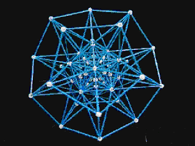
一些研究人员说，金字塔是用于尼罗河地下支流的抽水系统，他们说对了一部分。
水water是一种电磁效应倍增器，Delta-T里的仪式室都是被水环绕，这样可以放大仪式的能量。利用这个原理，古埃及人可以任意控制天气，摧毁敌人，或者创建一个星门stargate。这也是为什么Montauk计划/工程要坐落在大片水域的附近。
胡夫金字塔是一个大的太阳系能量格点防御体系的一部分，它连接月球和火星组成一个力场来驱逐侵入者。
胡夫金字塔还连接地球的其它地点，例如英国的巨石阵Stonehenge，至今还沉在海底的亚特兰蒂斯水晶，玻利维亚的Tiahuanaco，澳大利亚的那个大红石Ayers Rock，还有中国西安的白色金字塔（the White Pyramid，汉武帝陵），等等。它们合在一起形成类似电磁栅栏的储能场。
阿拉斯加Alaska的HAARP天线阵项目连接着这个能量场。
与此同时，埃及渐渐形成与华夏帝王制相似的国王统治体系。蜥蜥们设计的这套基于Osiris-Isis的宗教体系则继续向非洲北部和中东一些地方扩散。苏美尔的Nimrod-Semiramis体系则影响到更多亚洲中部区域。
但是，把所有这些不同的宗教完全统一起来，才是这整个计划一开始就设定好的最终目标。这是为什么亚伯拉罕Abraham，离开了苏美尔的乌城Ur，一路向西跋涉到中东。亚伯拉罕的追随者们最终到了埃及，这不是什么巧合――天狼星人随后便在埃及创建出希伯来人，希伯来人命中注定了成为未来世界的文化雏形。
这是为什么希伯来人被编码为在全世界到处游走，去影响那些不同的文化。
原笔记作者批注：这就很可能说明Enki是否正是亚伯拉罕abRAham里的"RA“，埃及的主神 ――他利用他自己的精子和他半个妹妹Inanna/Ninhursag的卵，基因加工出有生育能力的夏娃Eve――这是否是他的天狼星AN家族某个更大的隐秘计划之一部分？我们不得不猜测，Enki和他的兄弟Enlil（大多认为就是圣经里的Yahweh，耶和华）共同的父亲是不是一个半人造生物（小说《沙丘》里Muab Dib的半机器人父亲Harkonon？或者星球大战里的黑武士Darth
Vader？指环王小说里Frodo醒来发现他的祖先Sauron也是个半机械人……）。Enki的父亲AN也就是Antu，天狼星的太阳神（澳洲土著称其为Biki），能够远距离地操作一些议程，虽然他看起来对地球上这些可怜的生灵漠不关心。但现在看来，Swerdlow关于天狼星A的政治背景的描述的确很有逻辑性。
他们会站在一旁，把武器卖给双方然后看看谁能胜出――也许他们认为灵魂的学习和成长进化需要历经这种苦难？
我们的假设是，Enki，（Ra、abRAham、Akhenaten？Moses？Jesus……）受到了某种影响，他爱上了自己的基因实验，这个亚当和夏娃（读者你和读者我）是其他一些寄生族系的目标，于是他甚至不惜和他的家族作对，为了继续玩弄自己的实验，为了避免实验被其他族类侵食？？
甚至也有可能――他意识到自己创建的这支混血系将能免疫这场猎户座战争，给地球上这些来自各个星球的后裔人类一个机会，如果他们能够聚变自己的DNA，最终摆脱那些寄生族类的控制？？？
现在舞台已经成形，蜥蜥们的蓝血家族需要一个全球化的帝国，笼罩所有之前他们精心设计的不同文化。
他们同时也需要对付其他的ET派系，这些ET派系在欧洲辛勤地帮助那里的人类发展当地文化。
12、Illuminati
地球上光明会（Illuminati）的首脑叫Pindar，光明会有13支家族派系，Pindar是其中的成员，而且一定是男性。Pindar这个封号是“Pinnacle of the Draco”（Draco的塔尖）的缩写，也被称为是“Penis of the Dragon”（龙的阳具），象征性地代表权力的顶峰，以及控制、创造、渗透、扩张、侵犯以及恐惧。Pindar这个头衔的拥有者直接向地底的蜥蜥首领报告。
最近有些消息说Marquis de
Libeaux就是Pindar，这是假消息。目前的Pindar是罗斯切尔德家族（the Rothschild family）的首领，至少几百年来一直是。他主要的据点在德国的法兰克福市（Frankfurt）。70年代晚期他负责监督另一个和Montauk类似的工程，叫M.A.L.D.A.，Montauk-Alsace-Lorraine Dimensional Activation （Montauk之阿尔萨斯-洛林地区维度激活）。这项工程在法国Strasbourg斯特拉斯堡附近，历史上曾属于德国。
有趣的是长岛东边有个酿酒厂，离Montauk不远，叫做Pindar Vineyards（pindar酿酒/葡萄园）。这里产的葡萄酒日益风行，正在赢得国际声誉――这是计划的一部分，将来的全球帝国其中一个首都应该位于这里。红酒也是人血的象征符号――蜥蜥们周期性摄入的东西。红酒还可以被神圣化，像在罗马天主教（这个蜥蜥们的替罪羊）里一样，天主教里的仪式用红酒代替血来进行。
光明会在地球上建立的金字塔形控制体系完全和Draco帝国里的一样。金字塔（13层），和它顶端那只眼睛――这个美元钞票上的图形――正是一种形象的象征。眼睛作为金字塔的顶部，也解释了为什么胡夫金字塔的尖顶最初是用黄金堆砌成的。
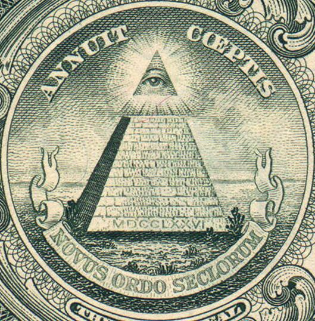
美钞上的金字塔图案
上下两段拉丁文分别是“他应允了我们的事业”，“时代的新秩序”
金字塔的黄金尖顶代表Pindar，接下来那只眼睛代表13个统治家族。
他们是下面这些：
・
罗斯切尔德家族Rothschild（Bauer
or Bower） - Pindar
・
布鲁斯家族Bruce
・
卡文迪许家族Cavendish (肯尼迪Kennedy)
・
麦迪西家族De Medici
・
汉诺威家族Hanover
・
哈布斯堡家族Hapsburg
・
克虏伯家族Krupp
・
金雀花家族Plantagenet
・
洛克菲勒家族Rockefeller
・
罗曼诺夫家族Romanov
・
辛克莱家族Sinclair（St.
Clair）
・
华伯家族Warburg (del
Banco)
・
温莎家族Windsor
(Saxe-Coburg-Gothe)
每一个家族对应一种特定的领域，比如：环球金融系统，军事科技/军工发展，意识控制，宗教系统，大众传媒等等。
每一个家族都有一个13人议会。13这个数字对他们有非同寻常的意义。他们知道神圣意识(God-Mind）的10个层面共包含了12种类型的能量，这12种能量之总和代表了第13种能量。――这被认为是最强大的知识。
他们还知道黄道12宫其实是13个，这第13宫一直被他们掩盖和隐藏着，因为它是天龙座（the sign of the Dragon）。这个星座有很多的秘密特征，某些线索能引向蜥蜥。因此这些秘密都被他们守护着。
这13个家族的下面一级就是”三百委员会“（Committee of 300）。三百委员会为Pindar和13个家族提供直接的支持。13个家族的成员全是蓝血谱系的会变形的蜥皮人（shape-shifter），但三百委员会，虽然他们也都带有相当比例的蜥蜥DNA，但是他们并不会形变。三百委员会的成员家族包括了下面这些有名的名字：Agnelli, Balliol, Beale, Bell, Bouvier, Bush, Cameron,
Campbell, Carnegie, Carrington, Coolidge, Delano, Douglas, Ford, Gardner,
Graham, Hamilton, Harriman, Heinz, Kuhn, Lindsay, Loeb, Mellon, Montgomery,
Morgan, Norman, Oppenheimer, Rhodes, Roosevelt, Russell, Savoy, Schiff, Seton,
Spencer, Stewart/Stuart, Taft, and Wilson
三百委员会有许多著名的机构：
・
黑手党组织Mafia
・
罗马俱乐部Clue
of Rome
・
中央情报局CIA
・
Bilderberger集团
・
美国国家安全局NSA
・
外交关系委员会CFR，Council
on Foreign Relations
・
以色列情报机构Mossad
・
国际货币基金会International
Monetary Fund
・
英国军情六处Secret
Service or MI6
・
美联储Federal
Reserve
・
美国国税局Internal
Revenue Service
・
皇家国际事务研究所Royal
Institute for International Affairs
・
国际刑警组织Interpol,
・
三边委员会Trilateral
Commission
上面的仅仅是几个例子――它们其实都是私人组织，但看起来都像是公众性/社会性的服务机构和团体，那只是被故意设计出来的假象。
许多国家其实都是当初被戏剧性地创建出来便于光明会达到特定的目的――例子有很多：美国、瑞士、科威特、前苏联、巴拿马、以色列、意大利、南斯拉夫、英国，还有撒哈拉沙漠以南大部分的非洲国家，所有的阿拉伯国家，所有中美洲和南美洲国家――这些国家在不同程度上都是被建立出来为这些统治家族积累财富，或者被当作隐藏、存放财富的地点，或者被用来制造区域间的不安定因素，冲突将拉动战争预算，他们再从中获利。
一个始终保持中立的”国家银行“是个不错的想法，于是瑞士被成立了。――光明会有了一个安全的地点保管他们的各种基金，这是个战争的硝烟和公众的好奇心都触及不到的地方。
当初美国建国时那13个殖民地每一个都对应一个光明会统治家族。最初的国旗有13颗星，13道条纹（现在还是）。鹰，美国的象征符号，爪子里握的叶子和箭数目都是13。美国，事实上是维吉利亚公司（the Virginia Company）的财产。――后者成立于1604年，这里面有罗斯切尔德家族的直接操作。本质上说，罗斯切尔德有必要为当时北美的开拓提供资金支持。
更进一步，维吉利亚公司的资产，包括美国，都（经梵蒂冈Vatican之手）属于神圣罗马帝国。这始于1213年国王詹姆士把所有英国资产都交给了带有蜥蜥血统的教皇。执行权依然保留给英国皇室家族，但实际的拥有者却是罗马天主教会。
美利坚合众国(the United States of America）并不是以那个航海家Amerigo Vespucci的名字来命名的――像你在学校里被告知的那样。光明会绝不会用一个绘制航海地图的意大利人来命名一块大陆（事实上是两块）。
美国的名字是一些词的组合。
共两层意思。
古希伯来/古埃及语的翻译就是――带有精神力量的狮子人类。
于是有了美元上的埃及金字塔和那只全视之眼all seeing eye。而鹰，相对于狮子的阳性精神力量，在这里更多传达一种对实体的掌控。因此拉丁译法则是――以一种阴性的物理现实形式去热爱财富。这映射出这些家族头脑中的想法。
我们现在看到了女性化的拉丁/鹰的痕迹和男性化的希伯来/狮子的痕迹。America这个词的含义象征了Lemuria和Atlantis两种文明的融合，象征了人类/天琴座与蜥蜥/天龙座的融合。也许，LSD这种光明会弄出来的迷幻药毒品还可以有另一种翻译：Lyrae-Sirius-Draco！天琴-天狼-天龙。
这三种文明的混合将形成最为强大的科技帝国。
美国建立于1776年，而刚好也在这一年，一个正式公开存在的光明会组织由Adam Weishaupt在德国巴伐利亚（Bavaria）创立。在公众看来，这个光明会是为了人类的普遍利益而成立的，很多欧洲的精英势力都是它的成员。
当然这是光明会全球仪式的一部分，美国的诞生和光明会的全球仪式――它们的出现，代表了真正的大众消费时代的开始。光明会利用美国这个工具成为正式被社会认同的一个组织，目前它的成员们普遍认为Adam Weishaupt长得很像乔治・华盛顿（George Washington）――所以一元美钞上的人其实是Weishaupt。
乔治・华盛顿是个富有的奴隶主和庄园主，他曾强暴一些女奴，把男奴用在一些神圣的仪式上，这些都不是什么秘密。许多黑人，如果他们愿意深究的话，其基因谱系可以一直追溯到这位国父身上。华盛顿还在1796年命令修建了Montauk灯塔，灯塔下面有个专门的地下工事，储备着大量的物资，以备来自英国的海上入侵――如果他知道当时这个地下工事今天会变成什么的话，说不定他知道？
有意思的是，这13个家族一直以来都保持某种相互激烈竞争的关系，在目前这段时间，西班牙、英国和法国的光明会派系为了获得对南北美洲的控制而互相争斗。罗斯切尔德家族指派专门的黑森雇佣军（Hessian troops）来维持各个派系间的秩序，同时监控整个形势。这些头领们喜欢这种战争游戏，故意让不同派系间保持适当的争斗，然后看看谁会胜出――成千上万的人命对他们来说没有任何意义。
美国命中注定被用来扩展雅利安人Aryan的版图，每到一处就以牺牲当地人口为代价。光明会消灭掉当地的原住民和他们的文化，因为很多这样的文化都包含着和神圣意识（God-Mind）有关的知识，通常是经过了很多代的传授和积累。光明会也不希望看到这些知识通过这些原住民传播到其他地区。
尤其重要的是――所有和Atlantis及天琴座之真相有关的民族记忆，都要被抹去。
印第安的其中一个部族茄洛基人（Cherokee）比较令光明会头疼，因为他们保留着很多关于亚特兰蒂斯人的知识，甚至这个部族的一些萨满（shaman）常常和一些动物比如熊或者大脚野人等通灵来获取信息。所以茄洛基印第安人被强迫离开他们位于阿帕拉契山脉（Appalachian Mountains）南部的家乡，一路跋涉进入奥克拉荷马州Oklahoma，许多人死在路上，于是有了后来这条泪水小径（The Trail of Tears），剩下的主要留在北卡罗来纳州North Carolina ，田纳西Tennessee，佐治亚州Georgia。而像莫霍克（Mohawk）这样的北美印第安族全部被解散了。长岛的原住印第安人，蒙塔克人（the Montauk），是亚特兰蒂斯人的直系后裔，他们称自己的首领为Pharaoh（法老）――这些印第安人全都被有系统地屠杀。
罗斯切尔德家族和非洲的黑奴买卖有很深的联系，黑奴们主要被运到南、北美洲和加勒比地区。埃塞俄比亚东部和苏丹地区的黑人他们则从不考虑――因为所罗门Solomon的后裔们在那片区域。奴隶人口主要来自非洲中部和西部，那里集中了很纯的Anunnaki和猿猴的混血基因，其中的意识编程正是光明会所需要的。
罗斯切尔德家族认为，分裂美国的殖民地能创造出双倍的收益，于是从政治上进行操作，引发美国的内战（the Civil War），同时从财政上为战争提供支持。――这场内战也是一次大的全球仪式：奴隶制从此步入下一个阶段。
战争最终“允许”北方获胜，从而公开地废除了奴隶制。最好的奴隶是那些从未意识到他们自己就是奴隶的人。这缓解了社会上的叛乱和抵抗，它是南北战争一个直接结果。但本质上战后南部的黑人依然是奴隶，隔离措施依然存在，甚至在北部也是。光明会依旧把黑人当作第二或者第三等公民，唯一的区别是奴隶制从此变得更难以察觉，更加隐蔽。
除了美国内战，还有一些被设计的战争也都是为了最终的全球化做铺垫。 1898-1899年西班牙和美国之间的冲突让美国的光明会收获了更多的领土。第一次世界大战被设计用来修改欧洲的版图规划，同时测试将来会用到的病毒/化学武器技术。在时间上刚好和一战吻合的那场西班牙流感，夺走的生命比战争里的伤亡还多。它被设计用来消减人口，使控制更加容易。一战还为后来德国在二战里扮演的角色奠定了基础。
二战是最终的全球消减计划的提前演习，它同时被用来测试意识控制体系，测试各种含氟物对大脑一些功能的伤害，测试奴隶化的劳动营机制以及这个过程里群体反抗事件的发展原理，测试“利用社会个体互相监视举报”的机制。
二战实现了光明会的三个目的：一，光明会的一些象征图形，比如纳粹的标志以及圆头十字架，从他们在西藏和埃及的地下据点步入了公众的视野。二，以色列的建立，作为将来新世界宗教的地基。三，核武器的出现，非常重要的全球仪式的一部分。
德国在二战时训练了一批性奴隶，把他们当作精英圈子里传送信息的工具。性奴有女性也有男性，都经历过意识洗脑，比如通过“瑞希程序”（Wilhelm Reich procedures）――这在美国是违法的，但光明会和政府都有使用。
1945年，在北纬33度线上一个叫特里尼蒂（Trinity，这个词的意思也是”三合一“）的地方，美国试爆了第一颗原子弹，作为之后投放日本本土的一次测试。这次爆炸具有仪式意义，代表同步发生的物质/能量的诞生与毁灭。年代本身也有象征意义―― 1 + 9 = 10，代表神圣意识的10个层次；进一步相加10的各位数字： 1 + 0 = 1，表示一个新的开端。4 + 5 = 9，表示一个周期的结束。
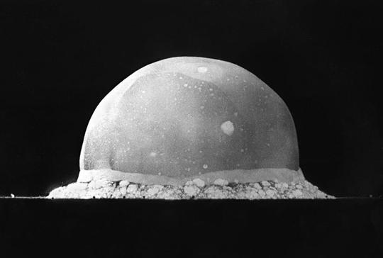
美国第一次核试验，爆炸后0.016秒的图像，火球大约200米宽
二战导致了欧洲和美国的光明会势力挫败日本光明会派系的全球化野心。日本以裕仁天皇Hirohito为代表的统治家族，一直以来被他们视为是不合法的，13个光明会家族因此比较排挤日本。日本人认为，他们是纯血统的Lemuria大陆蜥蜥后裔。
欧洲和美国的光明会声称，日本人的远祖蜥蜥们，在Draco帝国里属于较低的等级。这个较低等级的蜥蜥类型属于劳动力阶层，没有任何的势力或影响。他们还声称，东印度人也属较低等级。13个光明会家族认为浅色的皮肤和头发是精英族类的标志。
1994年1月17日，日本赠送给加利福利亚一次地震；一年之后的同一天，
每一年，光明会都要举行会议，为下一年的具体事件制定计划――他们的主要议程几千年前就已设计好了。19世纪中叶，他们订好了一个确定的将来的日期，到时候将彻底地实现全球化控制。――他们制订的这个议程叫做“Plan 2000”。
但现在看来，计划后来被调整到2003年。不过，小布什的当选说明他们正走在通向最后目的地的大道上。公众需要从2000年的“选举”（哈！）中汲取教训，那就是――压根儿不要投票！
现在甚至连光明会自己都发现，掩盖他们那些秘密的计划已经变得越来越困难了。